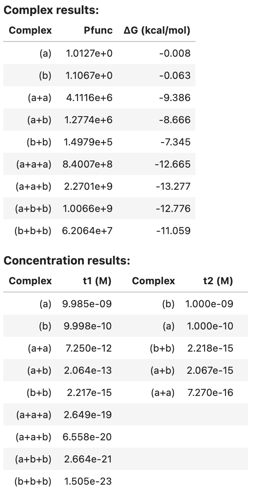
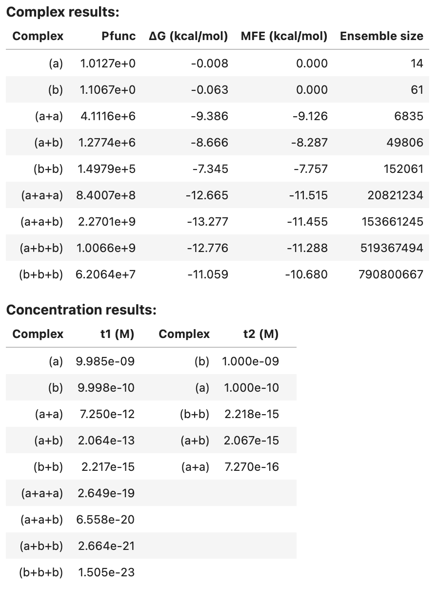
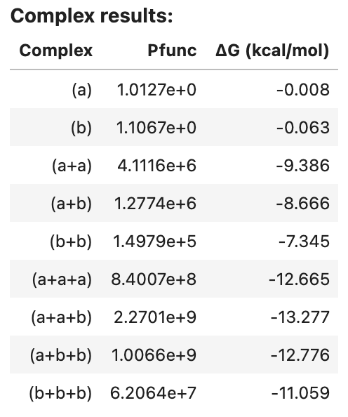
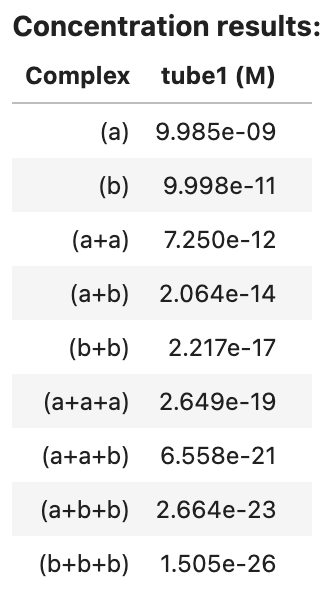
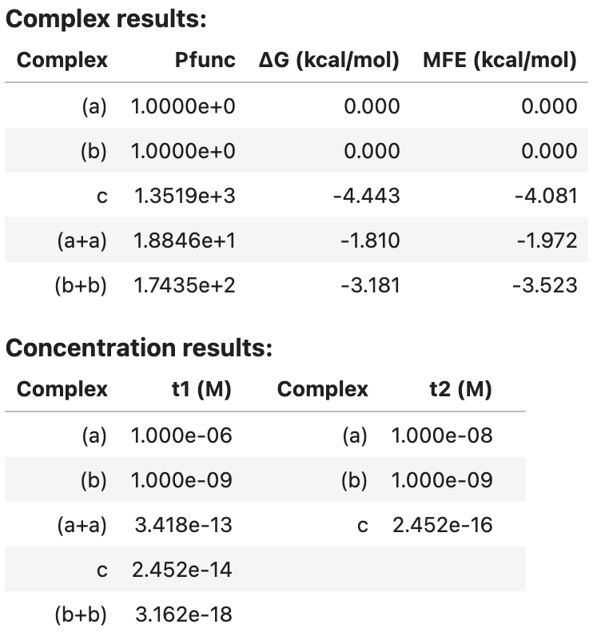
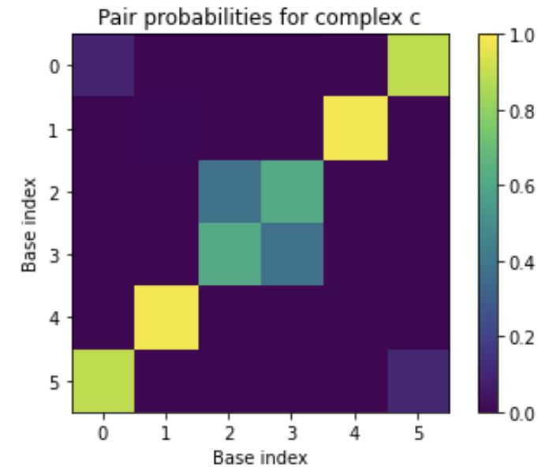

Analysis Jobs¶
NUPACK provides the capability to analyze equilibrium properties over one of two ensembles:
-
Complex Analysis: analyze the equilibrium base-pairing properties of a complex of interacting nucleic acid strands [Dirks07,Fornace20].
-
Test Tube Analysis: analyze the equilibrium concentrations and base-pairing properties for a test tube of interacting nucleic acid strands [Dirks07,Fornace20].
Note that a complex ensemble is subsidiary to a test tube ensemble, so complex analysis is inherent in test tube analysis (but not vice versa). As it is typically infeasible to experimentally study a single complex in isolation, we recommend analyzing nucleic acid strands in a test tube ensemble that contains the complex of interest as well as other competing complexes that might form in solution. For example, if one is experimentally studying strands A and B that are intended to predominantly form a secondary structure within the ensemble of complex A\cdot B, one should not presuppose that the strands do indeed form A\cdot B and simply analyze the base-pairing properties of that complex. Instead, it is more physically relevant to analyze a test tube ensemble containing strands A and B interacting to form multiple complex species (e.g., A, B, A\cdotA, A\cdotB, B\cdotB) so as to capture both concentration information (how much A\cdotB forms?) and structural information (what are the base-pairing properties of A\cdotB when it does form?).
NUPACK analysis algorithms enable simultaneous analysis of one or more test tube ensembles, providing significant cost savings if the same strands are present in more than one test tube. If for some reason, the test tube ensemble is not of interest for your application, NUPACK analysis algorithms also enable simultaneous analysis of one or more complex ensembles, providing significant cost savings if the same strands are present in more than one complex.
Specify a strand¶
A Strand is a single molecule specified as a sequence and a strand name (keyword name):
A = Strand('AGUCUAGGAUUCGGCGUGGGUUAA', name='A') # name is required for strands
B = Strand('UUAACCCACGCCGAAUCCUAGACUCAAAGUAGUCUAGGAUUCGGCGUG', name='B')
C = Strand('AGUCUAGGAUUCGGCGUGGGUUAACACGCCGAAUCCUAGACUACUUUG', name='C')
For mixed-material jobs, a material prefix specifies the material of each nucleotide:
- RNA: {
rA,rC,rG,rU} - DNA: {
dA,dC,dG,dT} - 2'OMe-RNA: {
mA,mC,mG,mU}
which need only be specified when there is a change in material:
D = Strand('rACGdAT', name='D') # 3 RNA nucleotides followed by 2 DNA nucleotides
For single-material jobs, the material prefix can be omitted for all nucleotides (as seen for strands A, B, C in the examples above).
Note
Material prefixes must be lowercase.
A Strand object supports a nt() method for calculating the number of nucleotides, for example:
A.nt() # --> 24
Specify a complex ensemble¶
A Complex of one or more interacting strands is specified as an ordered list of strands (i.e., an ordering of strands around a circle in a polymer graph) and an optional complex name (keyword name):
c1 = Complex([A]) # name is optional for complexes
c2 = Complex([A, B, B, C], name='ABBC')
c3 = Complex([A, A], name='AA')
Note
Commands that expect a Complex as an argument (e.g., c2) will alternatively accept a strand ordering (e.g.,[A, B, B, C]). Two complexes are considered to be the same if they represent the same strand ordering around a circle independent of rotations (e.g., Complex([A,B,C]) == Complex([B,C,A]) == Complex([C,A,B])).
In certain cases, it may be desirable to adjust the free energy of a complex (for example, if a protein is known to stabilize the complex). For such cases, the optional keyword bonus can be used to specify an additional free energy in kcal/mol (default: 0; negative value is stabilizing, postive value is destabilizing):
# destabilize c4 by 1 kcal/mol
c4 = Complex([A, B, C], name='ABC', bonus=+1.0)
# stabilize c5 by 10 kcal/mol
c5 = Complex([A, B], name='AB', bonus=-10.0)
Additional fields and methods are available for a Complex object:
.strands: a tuple of strands.nstrands(): the number of strands in the complex.nt(): the number of nucleotides in the complex
For example:
c2.strands # --> (<Strand A>, <Strand B>, <Strand B>, <Strand C>)
c2.nstrands() # --> 4
c2.nt() # --> 168
Specify a test tube ensemble¶
A Tube is specified as a tube name (keyword name) and a set of strands (keyword strands), each introduced at a user-specified concentration (units of M), that interact to form a set of complexes (keyword complexes: defaults to the strand set).
The set of complexes is optionally specified using SetSpec() in any of three ways:
- Combinatorially using keyword
max_sizeto automatically generate the set of all complexes up to a specified number of strands (default:max_size=1). - Using keyword
includeto include an explicitly specified set of complexes (default:None). - Using keyword
excludeto exclude an explicitly specified set of complexes (default:None).
For example:
t1 = Tube(strands={A: 1e-6, B: 1e-8}, name='t1') # complexes defaults to [A, B]
t2 = Tube(strands={A: 1e-6, B: 1e-8, C: 1e-12},
complexes=SetSpec(max_size=3, include=[c2,[B, B, B, B]], exclude=[c1]),
name='t2')
If desired, the complexes in a specified Tube can be queried as follows:
print(t1.complexes) # --> {<Complex A>, <Complex B>}
print(t2.complexes) # --> {<Complex (C+C+B)>, <Complex (B)>,
# <Complex (A+C+B)>, <Complex (C+C+C)>, <Complex (C)>, <Complex (A+A+B)>,
# <Complex (A+C)>, <Complex (B+B+B+B)>, <Complex (A+A)>, <Complex (A+B+B)>,
# <Complex (B+B)>, <Complex (A+B)>, <Complex (B+B+B)>, <Complex (A+B+C)>,
# <Complex (A+C+C)>, <Complex (A+A+A)>, <Complex (C+C)>, <Complex (A+A+C)>,
# <Complex ABBC>, <Complex (C+B+B)>, <Complex (C+B)>}
Note
Note that include and exclude accept both complex identifiers (e.g., c2) and strand orderings (e.g., [B, B, B, B]).
Run a test tube analysis job¶
The tube_analysis command calculates the partition function, and equilibrium concentration, for each complex species j in one or more test tube ensembles. The test tube ensembles to be analyzed are specified using the tubes keyword. If desired, a physical model is specified using the model keyword (otherwise the default physical model is used):
# specify strands
a = Strand('CUGAUCGAU', name='a')
b = Strand('GAUCGUAGUC', name='b')
# specify tubes
t1 = Tube(strands={a: 1e-8, b: 1e-9}, complexes=SetSpec(max_size=3), name='t1')
t2 = Tube(strands={a: 1e-10, b: 1e-9}, complexes=SetSpec(max_size=2), name='t2')
# analyze tubes
model1 = Model()
tube_results = tube_analysis(tubes=[t1, t2], model=model1)
tube_analysis returns an AnalysisResult object that can be viewed as a table in a Jupyter notebook, for example:
tube_results

For each complex in the ensemble, the partition function and complex free energy (units of kcal/mol) are displayed. For each tube, the equilibrium complex concentration of each complex in the tube is displayed (units of M).
Optionally, additional quantities are calculated for each complex in the specified tubes (see Job Options). For example, additionally calculate equilibrium base-pairing probabilities, the MFE proxy structure(s), 100 Boltzmann-sampled structures, and the ensemble size for each complex in the tube:
model1 = Model()
tube_results2 = tube_analysis(tubes=[t1, t2], model=model1,
compute=['pairs', 'mfe', 'sample', 'ensemble_size'],
options={'num_sample': 100}) # max_size=1 default
tube_results2

Note that pairs and sample results are too large to be included in the summary table. See below for programmatic access to these results.
Note
If desired, the results of a tube_analysis job can alternatively be calculated in two steps:
- Step 1: run a
complex_analysisjob (to calculate the partition function for each complex); - Step 2: run a
complex_concentrationsjob (to calculate the equilibrium concentration for each complex in the context of a test tube given user-specified strand concentrations).
Most of the computational cost is in Step 1. The user-specified strand concentrations are used only in Step 2. Hence, if you intend to analyze N test tubes containing the same strand species but N different sets of strand concentrations, it is cheaper to call complex_analysis once and complex_concentrations N times, rather than to call tube_analysis N times.
Specify a set of complexes¶
A ComplexSet is specified as a set of strands (keyword strands) that interact to form a set of complexes (keyword complexes: defaults to the strand set). The set of complexes is optionally specified using SetSpec() in any of three ways:
- Combinatorially using keyword
max_sizeto automatically generate the set of all complexes up to a specified number of strands (default:max_size=1). - Using keyword
includeto include an explicitly specified set of complexes (default:None). - Using keyword
excludeto exclude an explicitly specified set of complexes (default:None).
For example:
set1 = ComplexSet(strands=[A, B, C]) # complexes defaults to [[A], [B], [C]]
set2 = ComplexSet(strands=[A, B, C],
complexes=SetSpec(max_size=3, include=[c2, [B, B, B, B]], exclude=[c1]))
Note
Note that a ComplexSet and a Tube both specify a set of complexes \Psi that form from a set of strands \Psi^0. The difference is that Tube further specifies the concentration of each strand in \Psi^0 in order to specify a test tube ensemble.
Run a complex analysis job¶
The complex_analysis command calculates one or more physical quantities (see Job Options)
for each complex in a ComplexSet:
# specify strands
a = Strand('CUGAUCGAU', name='a')
b = Strand('GAUCGUAGUC', name='b')
# specify complex set
set1 = ComplexSet(strands=[a, b], complexes=SetSpec(max_size=3))
# calculate the partition function for each complex in the complex set
model1 = Model()
complex_results1 = complex_analysis(complexes=set1, model=model1, compute=['pfunc'])
complex_analysis returns an AnalysisResult object that can be viewed as a table in a Jupyter notebook, for example:
complex_results1
Output:

If desired, a Tube can be specified in place of a ComplexSet, in which case the strand concentrations are ignored since complex_analysis does not calculate equilibrium complex concentrations, and hence does not require concentration information for the strand species. For example:
# specify strands
a = Strand('CUGAUCGAU', name='a')
b = Strand('GAUCGUAGUC', name='b')
# specify tube
tube1 = Tube(strands={a:1e-8, b:1e-10}, complexes=SetSpec(max_size=3), name='tube1')
# calculate the partition function for each complex in the tube
model1 = Model()
complex_results2 = complex_analysis(complexes=tube1, model=model1, compute=['pfunc'])
Run a complex concentrations job¶
Use the complex_concentrations command to calculate the equilibrium concentration of each complex in a test tube ensemble (keyword tube) using the AnalysisResult data (keyword data) from a previous call to complex_analysis (which at minimum must contain the partition function for each complex). The tube ensemble can be specified either using Tube (which specifies strand concentrations) or as a ComplexSet, in which case the strand concentrations must additionally be specified (keyword concentrations):
# specify strand concentrations for ComplexSet set1
concentration_results1 = complex_concentrations(tube=set1, data=complex_results1,
concentrations={a: 1e-8, b: 1e-8})
# use strand concentrations previously specified for tube1
concentration_results2 = complex_concentrations(tube=tube1, data=complex_results2)
Note
Note that complex_concentrations operates on a single tube ensemble at a time since each tube represents a separate coupled equilibrium problem and no savings can be achieved by considering multiple concentration solves at the same time.
complex_concentrations returns an AnalysisResult object that can be viewed as a table in a Jupyter notebook, for example:
concentration_results2
Output:

Job options¶
The compute keyword is optional for tube_analysis (default: 'pfunc') and required for complex_analysis (no default), specifying a list of strings denoting calculations to be performed for each complex [Fornace20]:
-
'pfunc': calculate the partition function. -
'pairs': calculate the matrix of equilibrium base-pairing probabilities. If'pairs'is specified,tube_analysisorcomplex_concentrationswill further calculate the matrix of test tube ensemble pair fractions. See thesparsity_fractionandsparsity_thresholdoptions below. -
'sample': calculate a set of Boltzmann-sampled structures from the complex ensemble. See optionnum_samplebelow. -
'mfe': calculate the MFE proxy structure, the free energy of the MFE proxy secondary structure and the free energy of the MFE stacking state. If there is more than one MFE stacking state, the algorithm returns a list of the corresponding MFE proxy secondary structures, each with the free energy of the MFE proxy secondary structure and with the (same) free energy of the MFE stacking state. -
'subopt': calculate the set of suboptimal proxy structures with a stacking state within a specified free energy gap of the MFE stacking state. The algorithm returns a list of suboptimal proxy secondary strutures, each with the free energy of the MFE proxy secondary structure, and with the free energy of its lowest-energy stacking state that falls within the energy gap. See optionsubopt_gapbelow. -
'ensemble_size': calculate the complex ensemble size in terms of either the number of secondary structures (if using a physical model withnostacking) or the number of stacking states (if using a physical model withstacking).
The optional options keyword specifies options that modify the calculations performed for each complex:
-
'sparsity_fraction': fcan be used in conjuction with'pairs'to return a sparse matrix containing the fractionfof the largest pair probabilities for each base (default'sparsity': 1returns the full pair probability matrix). -
'sparsity_threshold': tcan be used in conjuction with'pairs'to return a sparse matrix containing the only pair probabilities greater than or equal tot(default'sparsity_threshold': 0returns the full pair probability matrix). -
'num_sample': ncan be used in conjunction with'sample'to specify the number of structures to be sampled (default'num_sample': 1). -
'subopt_gap': gcan be used in conjunction with'subopt'to specify the (non-negative) free energy gap in kcal/mol (default'subopt_gap': 0).
By default, NUPACK analysis jobs run in parallel.
Job results¶
Scalar results of NUPACK analysis jobs can be conveniently displayed as a table, printed as text, or introspected programmatically. Consider the following test tube analysis job:
a = Strand('CCG', name='a')
b = Strand('CGG', name='b')
c = Complex([a, b], name='c')
t1 = Tube({a: 1e-6, b: 1e-9}, complexes=SetSpec(max_size=2, include=[c]), name='t1')
t2 = Tube({a: 1e-8, b: 1e-9}, complexes=SetSpec(include=[c]), name='t2')
my_model = Model()
my_result = tube_analysis([t1, t2], model=my_model,
compute=['pfunc', 'pairs', 'mfe', 'sample', 'subopt'],
options={'num_sample': 2, 'energy_gap': 0.5})
Tabular display¶
You can display a summary table of results in a Jupyter notebook, for example:
my_result
Output:

Textual display¶
You can view an ASCII representation of the same data by using the print function:
print(my_result)
Output:
Complex results: Complex Pfunc dG (kcal/mol) MFE (kcal/mol) 0 (a) 1.0000e+0 0.000 0.000 1 (b) 1.0000e+0 0.000 0.000 2 c 1.3519e+3 -4.443 -4.081 3 (a+a) 1.8846e+1 -1.810 -1.972 4 (b+b) 1.7435e+2 -3.181 -3.523 Concentration results: Complex t1 (M) Complex t2 (M) (a) 1.000e-06 (a) 1.000e-08 (b) 1.000e-09 (b) 1.000e-09 (a+a) 3.418e-13 c 2.452e-16 c 2.452e-14 (b+b) 3.162e-18
For convenience, you can print the identical ASCII result to a text file using the save_text function:
my_result.save_text('my_result.txt')
Programmatic access¶
More detailed results can also be displayed by programmatic access into an AnalysisResult object. This class contains two fields:
.complexes: a Pythondictmapping eachComplexto aComplexResult.tubes: a Pythondictmapping eachTubeto aTubeResult
The information contained in these two fields depends on which type of analysis calculation was performed:
- For
tube_analysis, the.tubesand.complexesfields are both non-empty. - For
complex_analysis, only the.complexesfield is non-empty. - For
complex_concentrations, only the.tubesfield is non-empty.
For convenience, you can index into an AnalysisResult via a Complex or Tube identifier (or via the assigned or auto-generated name of a Complex or Tube) as described in the following two sections.
Results for individual complexes¶
You can index into AnalysisResult object via a Complex identifier (or via the name of a Complex) to get a ComplexResult object containing all the complex ensemble quantities that were calculated in a tube_analysis or complex_analysis calculation. A ComplexResult contains the following fields (if a quantity was not computed, the field is set to None):
pfunc: the complex partition function (held as adecimal.Decimal; convert to afloatviafloat(pf)or calculate the logarithm viafloat(pf.log())).free_energy: the complex free energy in kcal/mol (held as afloat).pairs: the matrix of equilibrium base-pairing probabilities (held as aPairsMatrixobject containing a.to_array()method for conversion to numpy as illustrated below).sample: a list of Boltzmann-sampled structures, each an instance of aStructureobject.mfe: a list of MFE proxy structures. Each entry contains fields.structure,.energy, and.stack_energy..energyis the free energy of the MFE proxy secondary structure, while.stack_energyis the free energy of the MFE stacking state.subopt: a list of suboptimal proxy structures. Each entry contains fields.structure,.energy, and.stack_energy..energyis the free energy of the MFE proxy secondary structure, while.stack_energyis the free energy of its lowest-energy stacking state that falls within the energy gap.ensemble_size: the complex ensemble size (held asint) representing either the number of secondary structures (if using a physical model withnostacking) or the number of stacking states (if using a physical model withstacking).model: theModelthat was used for the analysis calculation.
For example, we can index the AnalysisResult object my_result with complex c (or by its name 'c') to obtain a ComplexResult object c_result that enables printing of specific physical quantities for that complex:
c_result = my_result[c] # equivalent to my_result['c']
print('Physical quantities for complex c')
print('Complex free energy: %.2f kcal/mol' % c_result.free_energy)
print('Partition function: %.2e' % c_result.pfunc)
print('MFE proxy structure: %s' % c_result.mfe[0].structure)
print('Free energy of MFE proxy structure: %.2f kcal/mol' % c_result.mfe[0].energy)
print('Equilibrium pair probabilities: \n%s' % c_result.pairs)
Output:
Physical quantities for complex c
Complex free energy: -4.44 kcal/mol
Partition function: 1.35e+03
MFE proxy structure: (((+)))
Free energy of MFE proxy structure: -4.08 kcal/mol
Equilibrium pair probabilities:
[[0.1000 0.0000 0.0000 0.0000 0.0061 0.8938]
[0.0000 0.0083 0.0000 0.0000 0.9873 0.0044]
[0.0000 0.0000 0.3839 0.6161 0.0000 0.0000]
[0.0000 0.0000 0.6161 0.3839 0.0000 0.0000]
[0.0061 0.9873 0.0000 0.0000 0.0066 0.0000]
[0.8938 0.0044 0.0000 0.0000 0.0000 0.1018]]
Note
Note that a complex such as (a+a) that was auto-generated as part of the test tube ensemble (using max_size=2) does not have an identifier, but does have an auto-generated name that can be used to index an AnalysisResult:
aa_result = my_result['(a+a)']
If desired, the MFE proxy structure can be represented as a structure matrix of zeros and ones:
c_result = my_result[c]
print('MFE proxy structure:\n%s' % c_result.mfe[0].structure.matrix())
Output:
MFE proxy structure:
[[0 0 0 0 0 1]
[0 0 0 0 1 0]
[0 0 0 1 0 0]
[0 0 1 0 0 0]
[0 1 0 0 0 0]
[1 0 0 0 0 0]]
The equilibrium pair probability matrix is returned as a PairsMatrix object, which can be converted to a numpy array via the to_array() method for display in a Jupyter notebook:
import matplotlib.pyplot as plt
plt.imshow(my_result[c].pairs.to_array())
plt.xlabel('Base index')
plt.ylabel('Base index')
plt.title('Pair probabilities for complex c')
plt.colorbar()
plt.clim(0, 1)
plt.savefig('my-figure.pdf') # optionally, save a PDF of your figure
Output:

Note
If your installation of matplotlib is not up-to-date, you may need to include %matplotlib inline at the top of the Jupyter notebook for the pairs plot to appear in your notebook instead of in a separate window.
For some use cases, you may wish to convert a PairsMatrix to a scipy matrix via the to_sparse() method.
It is straightforward to collect information across complexes in an AnalysisResult object. Since my_result.complexes is an ordinary python dict, iterating through its .items() enables collection of each complex result. For example, to operate on the equilibrium pair probability matrix for each complex in my_result:
import numpy as np
for my_complex, complex_result in my_result.complexes.items():
P = complex_result.pairs.to_array()
s = 'Expected number of unpaired nucleotides at equilibrium in complex %s = %.2f'
print(s % (my_complex.name, np.diagonal(P).sum()))
Output:
Expected number of unpaired nucleotides at equilibrium in complex c = 0.98
Expected number of unpaired nucleotides at equilibrium in complex (b) = 3.00
Expected number of unpaired nucleotides at equilibrium in complex (a+a) = 2.70
Expected number of unpaired nucleotides at equilibrium in complex (b+b) = 2.25
Expected number of unpaired nucleotides at equilibrium in complex (a) = 3.00
To collect a dict of MFEs for each complex:
my_mfes = {my_complex.name: complex_result.mfe[0].energy
for my_complex, complex_result in my_result.complexes.items()}
print(my_mfes)
Output:
{'c': -4.081351280212402, '(b)': 0.0, '(a+a)': -1.9719057083129883, '(b+b)': -3.5225014686584473, '(a)': 0.0}
To print out the complex concentrations for a given tube:
for my_complex, conc in my_result.tubes[t1].complex_concentrations.items():
print('The equilibrium concentration of %s is %.2e M' % (my_complex.name, conc))
Output:
The equilibrium concentration of c is 2.45e-14 M
The equilibrium concentration of (b) is 1.00e-09 M
The equilibrium concentration of (a+a) is 3.42e-13 M
The equilibrium concentration of (b+b) is 3.16e-18 M
The equilibrium concentration of (a) is 1.00e-06 M
Results for individual test tubes¶
You can index into an AnalysisResult object via a Tube identifier (or via the name of a Tube) to get a TubeResult object containing all the tube ensemble quantities that were calculated in a tube_analysis or complex_concentrations calculation. This class contains the following fields:
complex_concentrations: adictfromComplexto its equilibrium concentration in molar (held as afloat).fraction_bases_unpaired: afloatin [0,1] denoting the equilibrium fraction of nucleotides that are unpaired in the test tube ensemble.ensemble_pair_fractions: a square matrix of test tube ensemble pair fractions. Row and column indices refer to the concatenated base index formed by concatenating the strands of the inputTube(in order). This field isNoneif pair probabilities were not calculated (i.e., if optionpairswas not specified for thetube_analysisorcomplex_analysisjob).
Concentrations may be printed as follows:
t1_result = my_result[t1] # equivalent to my_result['t1']
for my_complex, conc in t1_result.complex_concentrations.items():
print('The equilibrium concentration of %s is %.3e M' % (my_complex.name, conc))
Output:
The equilibrium concentration of c is 2.452e-14 M
The equilibrium concentration of (b) is 1.000e-09 M
The equilibrium concentration of (a+a) is 3.418e-13 M
The equilibrium concentration of (b+b) is 3.162e-18 M
The equilibrium concentration of (a) is 1.000e-06 M
Test tube ensemble pair fractions may be printed as follows:
print(t1_result.ensemble_pair_fractions)
Output:
[[1.0000 0.0000 0.0000 0.0000 0.0000 0.0000]
[0.0000 1.0000 0.0000 0.0000 0.0000 0.0000]
[0.0000 0.0000 1.0000 0.0000 0.0000 0.0000]
[0.0000 0.0000 0.0000 1.0000 0.0000 0.0000]
[0.0000 0.0000 0.0000 0.0000 1.0000 0.0000]
[0.0000 0.0000 0.0000 0.0000 0.0000 1.0000]]
Saving a job summary¶
To save a textual job summary using the save_text method:
my_result.save_text('my-result.txt')
Saving and reloading job results¶
Save an AnalysisResult as a binary file using the save method:
my_result.save('my-result.o')
to enable reloading during a future session using the load method:
my_result = AnalysisResult.load('my-result.o')
This functionality uses Python’s built-in pickle module.
| Dirks07 | Dirks R.M., Bois J.S., Schaeffer J.M., Winfree E., Pierce N.A.: Thermodynamic analysis of interacting nucleic acid strands. SIAM Rev.. 49, (2007) |
| Fornace20 | Fornace M.E., Porubsky N.J., Pierce N.A.: A unified dynamic programming framework for the analysis of interacting nucleic acid strands: Enhanced models, scalability, and speed. ACS Synth. Biol.. (2020) |